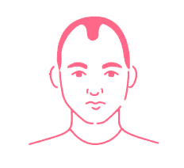

People say this works...
but Hair Loss can’t be stopped like that

Hair transplantation is a medical procedure that moves hair and hair follicles from a piece of your body called the contributor site to the balding part called the beneficiary site. The removed hair strands from one part of the body are placed into minuscule openings of the bald scalp.
Our trichologists practice Aesthetic Hair Implants certified as the World’s most innovative procedure which is performed by a certified Dermatologist / Surgeon. Our speacialists have performed 10000+ procedure that has helped our clients regain their youth. We believe in happy clients and our procedures are to live up to our client expectation by giving them a money back guarantee if they don’t see the desired results during the course of their treatment.
Exciting Fact:
This treatment can put up to 3,000 to 5,000 hair strands in a single sitting.
Non-surgical hair procedures can help you disguise in public by giving the effect of it growing right out of your scalp, just like natural hair. Our product is knitted with the best quality human hair that is weaved in thickness and colour to give more density to your hair.
Our experts will guide you at each stage of your journey with us and provide post-care recommendations.
It is an extraordinary solution for balding issues without undergoing surgery.
Perks
Long-lasting full hair without surgical procedure
Succeeds in hiding advanced hair loss
Unnoticeable and merges with natural hair
Individually customised

Platelet Rich Plasma (PRP) is one of the most advanced and famous non-surgical procedures that allow you to get rid of hair thinning and hair loss problems instantly. This procedure is taken care by our Dermatologists, who inject you with your Platelet-rich Plasma on your scalp which triggers the growth stimulation naturally.
PRP is considered one of the best therapeutic alternatives for the revival of hair growth that activates the growth of hair follicles showing a positive outcome.
For all those men and women who have been looking for effective alternative ways to treat their hair problems, PRP therapy can be an ultimate opportunity.
So, without doing much ado get this procedure done and enjoy your beautiful hair.
For Hair Loss we give a 360 degree holistic treatment with internal, external treatment and focus on controlling hair loss within three months of beginning of the treatment course.
Tricho Scalp Treatment Plus is a unique, newly found technology that generally uses manual lymph drainage for detoxification and rejuvenation of hair follicles. In this treatment, we work on the lymphatic system which is the secondary circulatory system, carrying nutrition, oxygen and toxins. With this treatment, we detoxify the scalp so that nutrition and oxygen supply increases to the hair follicles which helps in strengthening and stimulating the hair follicles and helps in hair growth.
This treatment helps in three ways:
Treatment Include

Thinning of hair indicates an early phase of hair loss and balding. This is the point at which the hair shaft, exclusively, begins to develop more slender and better in distance across with every hair cycle.
Our experts use the evolved PCT Rejuva Max with Plant stem extracts and RF Anagain 10X – the first of its kind transdermal hair follicular infiltrating machine that lessens hair fall and advances the thickening of hair. Our experts also make a point to help you in your hair growth journey by recommending internal, external and lifestyle changes for better hair care.
Plant stem cell technology intends to slow down and reduce the ageing process by working on stem cells within the dermal and epidermal layers of the skin.